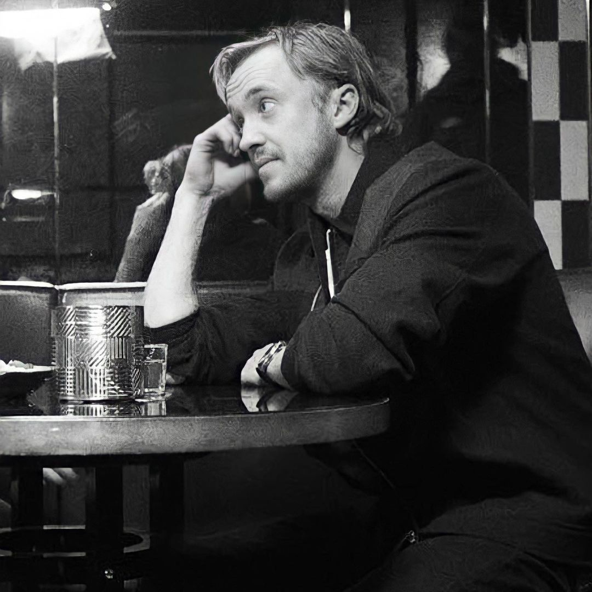

THOMAS ANDREW FELTON

THOMAS ANDREW FELTON
is an English actor and musician born in Epsom, Surrey, on September 22, 1987. He started his acting career at a young age, appearing in commercials and making his screen debut in "The Borrowers" in 1997.Felton gained widespread recognition for his role as Draco Malfoy in the film adaptations of J.K. Rowling's "Harry Potter" series.
In addition to his acting career, Felton is a talented musician. He has released original songs and albums, showcasing his musical abilities alongside his acting pursuits.
In 2022, Felton made his West End theater debut in the play "2:22 A Ghost Story" in London. He also published a memoir titled "Beyond the Wand: The Magic and Mayhem of Growing Up a Wizard," which debuted as a best-seller on The New York Times nonfiction list.
Overall, Tom Felton has established himself as a versatile artist, showcasing his talents in acting, music, and now literary pursuits, garnering acclaim for his contributions to various forms of entertainment.
Check out his Profiles!
Instagram
X
Spotify